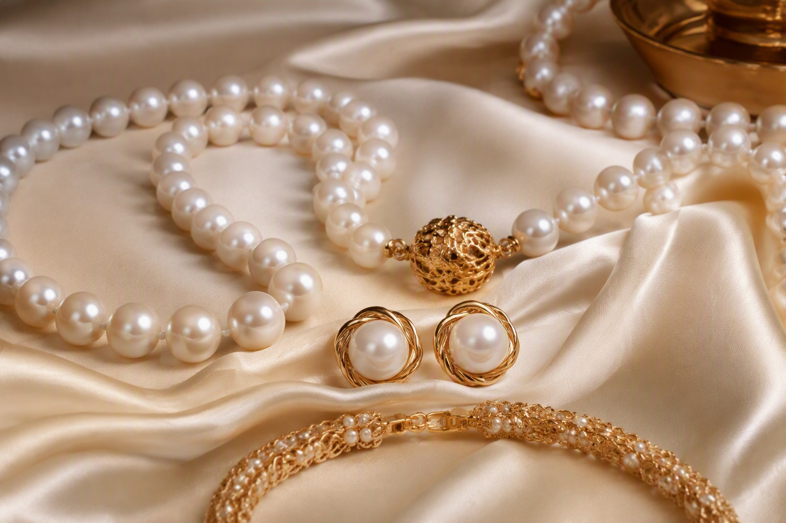
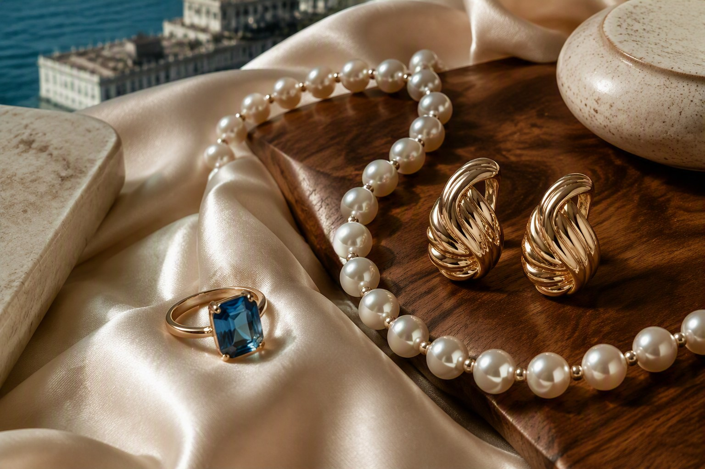
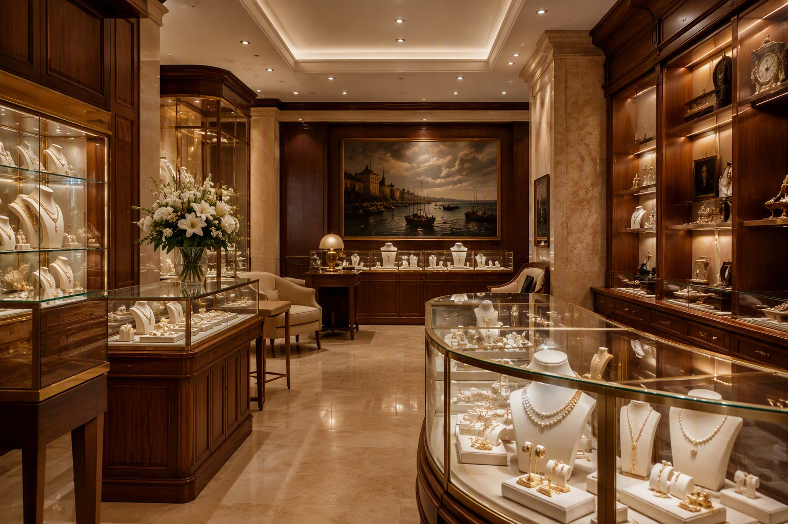
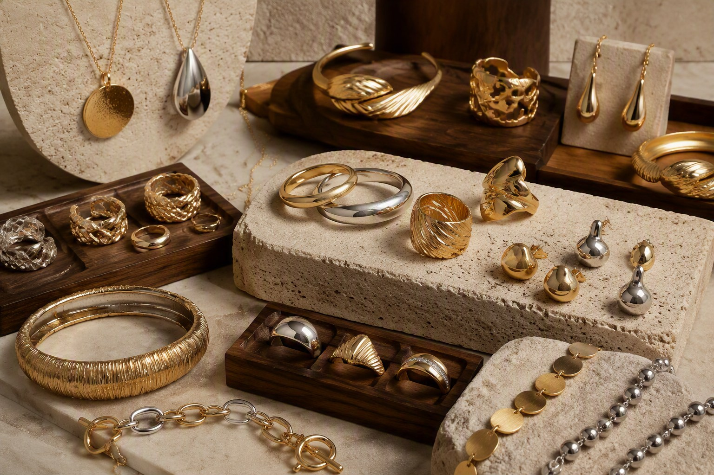
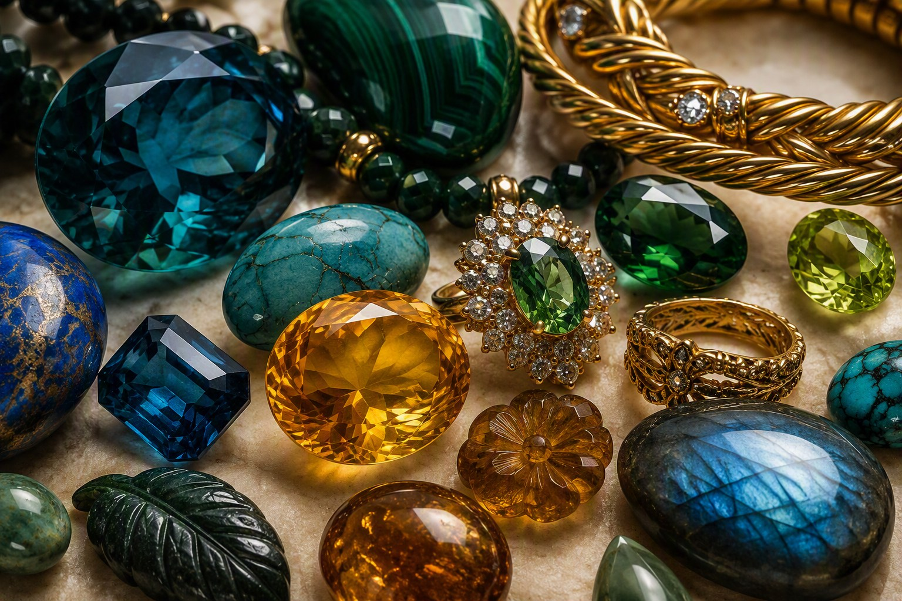
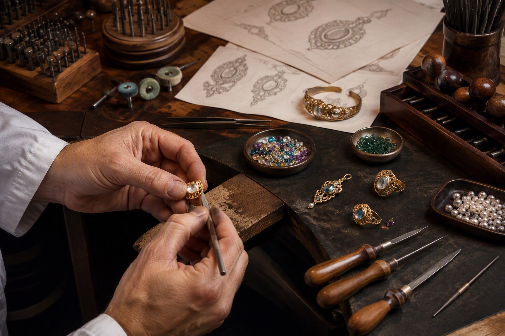
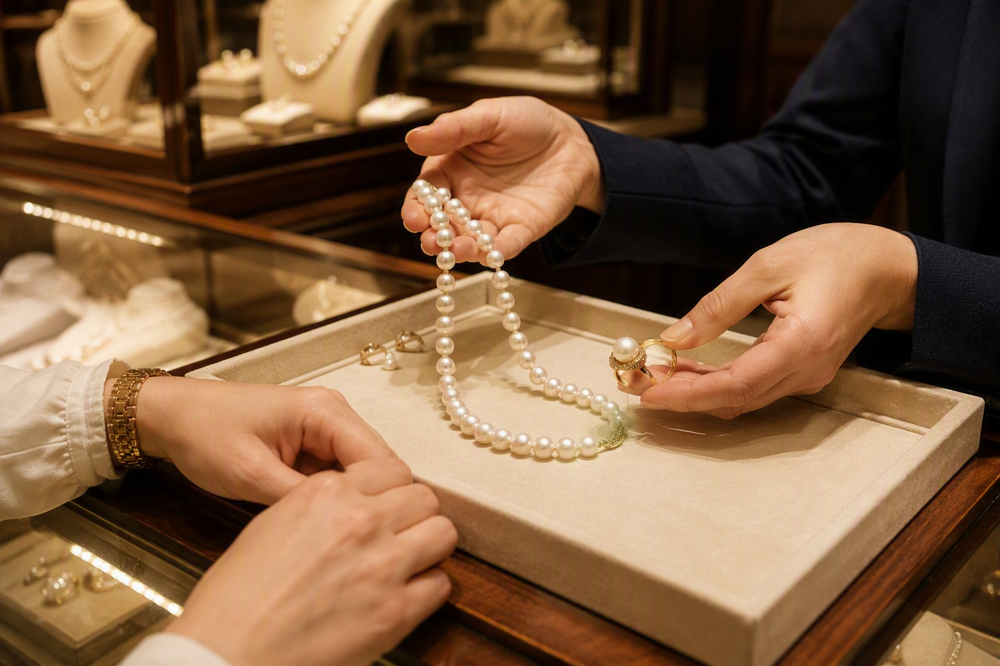
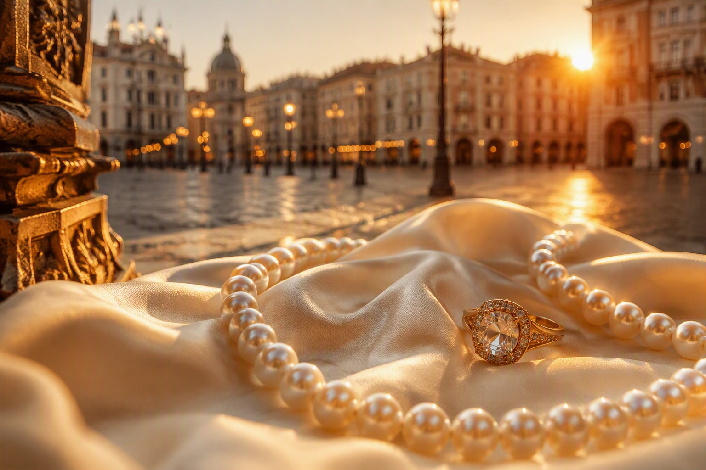

Perle
Eleganza naturale
Collane, orecchini e dettagli luminosi dal fascino senza tempo.

Gioielleria storica · Trieste
Tradizione artigiana, gemme e design contemporaneo nel cuore della città.
Scopri il nostro mondoVieni a trovarciDal 1965
La Gioielleria Annicchiarico nasce a Trieste nel 1965 grazie a Giacomo Annicchiarico, orafo, orologiaio e figlio d’arte.
La tradizione prosegue unendo gemmologia e design del gioiello, classicità e modernità, cura artigianale e consulenza personale.

La gioielleria
Un ambiente caldo e riservato dove scoprire gioielli classici e contemporanei, perle, pietre e creazioni ricercate.
Le proposte

Collane, orecchini e dettagli luminosi dal fascino senza tempo.



Laboratorio artigianale
Progettazione, lavorazione e attenzione al dettaglio per interpretare richieste personali e dare nuova vita ai gioielli.
Parla con la gioielleriaServizi
Realizzazioni su richiesta attraverso il laboratorio.
Supporto nella conoscenza e nella scelta di pietre e gioielli.
Cura e interventi dedicati ai gioielli.
Servizio tradizionale eseguito con attenzione e competenza.

La consulenza

Annicchiarico · Trieste